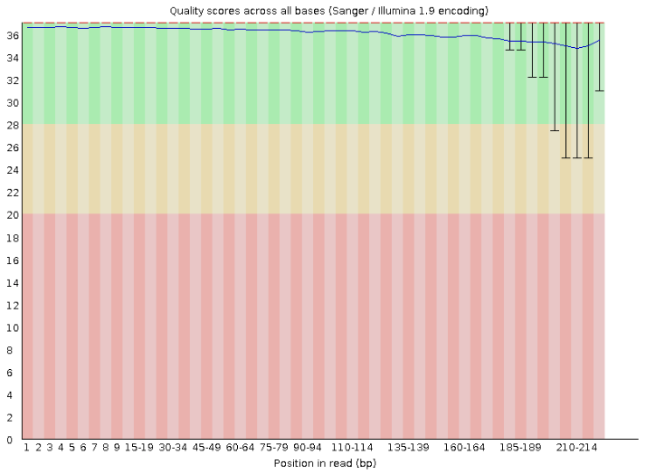

2.1 Topic 2.1
Teaching: 10 min || Exercises: 0 min
Overview
1.1 Insert First Topic Here
Contents of topic goes here
You can insert a video from YouTube using the below format
sub-heading
Insert your contents here.
another sub-heading
Insert your contents here.
Use the below format to introduce note callouts
heading
Insert your contents here.
1.2 Insert Second Topic Here
sub-heading
Insert your contents here.
The below format allows you to display codes in their natural way:
@SEQ_ID <-- SEQUENCE NAME
AGCGTGTACTGTGCATGTCGATG <-- SEQUENCE
+ <-- SEPARATOR
%%).1***-+*''))**55CCFF <-- QUALITY SCORESBelow is another format for callouts
Below is how to point to an image/figure in your fig directory.

We will explore more on FASTQC later.
MORE FORMARTING INSTRUCTIONS
Callouts
Note that there are five types of callouts, including: note, tip, warning, caution, and important.
This is a callout tip
This is a callout warning
This is a callout caution
This is a callout important.
This is a collapsible callout.
Source codes
python
1 + 1bash
1 + 1General syntax for displaying codes and output in a callout
Hiding notes
Hint
Insert notes here.Referencing figures/images

1.3 Credit
Information on this page has been adapted and modified from the following source: